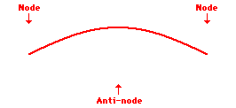

4.1 Излучение звука колеблющимися телами
Источником звуковых волн может служить любое колеблющееся тело: камертон, язычок звонка, струна, голосовые связки и так далее.
Послушаем:
Звук метронома
Звук колокольчика
Рассмотрим
принцип действия простейших источников звука.
Колебания
струны
Струна представляет собой тонкую, гибкую, сильно натянутую нить с равномерно распределенной по длине массой. При возбуждении струны, например, ударом или щипком, она будет совершать колебательное движение, при котором все ее участки смещаются в поперечном направлении. Струны являются источником звука многих музыкальных инструментов.
Рассмотрим
струну длины L,
концы которой закреплены. Обозначим скорость распространения изгибных волн в
струне V.
При возбуждении колебаний на струне установится стоячая волна. При этом на
концах будут находиться узлы, а между ними – одна или несколько пучностей. Так
как расстояние между узлами равно λ/2, то на длине струны должно уложиться целое
число полуволн (L
= mλ/2),
то есть на струне могут возникать только такие стоячие волны, у которых длина
волны λ = 2L/m (m = 1, 2, 3 …). Используя формулу связи
длины волны с частотой колебаний и скоростью распространения волны λ = V/f,
получим формулу для определения собственных частот колебаний
струны:
f
=
V /λ = mV/( 2L).
Скорость
распространения поперечных колебаний в струне определяется
формулой:
где
F,
d,
ρ – сила
натяжения, диаметр и плотность материала струны
соответственно. Следовательно, выражение для собственных частот колебаний
струны имеет вид:
Наименьшая собственная частота f1 (m = 1) называется основной частотой или основным тоном. Более высокие частоты, кратные f1, называются обертонами или гармониками.
На
рисунке представлены стоячие волны, частоты которых соответствуют основному тону
(m
=
1), первому обертону (m
=
2), второму обертону (m
=
3).
Первая гармоника (основной тон)

Вторая гармоника (первый обертон)

Третья гармоника (второй обертон)
Частота
основного тона, определяющая высоту звучания струны, равна
Из формулы видно, что звук струны становится выше при увеличении натяжения струны. Увеличение длины струны, ее диаметра и плотности материала приводит к понижению звучания. Наличие и амплитуды обертонов, зависящие от способа возбуждения струны, определяют тембр излучаемого звука.
Видеофрагмент "Звук от струн гитары" (1:29):
Послушаем:
Скрипка
Фортепиано
Колебания
мембраны
Мембрана
– это гибкая тонкая пленка, натянутая по
периметру. Спектр звука, излучаемого колеблющейся мембраной, определяется ее
формой, размерами, натяжением и поверхностной
плотностью.
Частоты
собственных колебаний прямоугольной мембраны, закрепленной по контуру,
равны:
где
T
– натяжение по краю мембраны (Н/м), σ – поверхностная плотность мембраны
(кг/м2), а и b
– стороны
мембраны, m
и
n
– целые числа. Из формулы следует, что частоты собственных колебаний и,
следовательно, высота звука, излучаемого мембраной, повышаюются при увеличении
натяжения мембраны и понижаются при увеличении ее плотности и размеров.
На
рисунке
изображены несколько собственных колебаний прямоугольной мембраны.
Мембраны из различных материалов используются как источник звука в ударных музыкальных инструментах.
Послушаем:
Барабаны
Электродинамический
громкоговоритель (динамик)
Наибольшее
распространение в качестве излучателей звука получили электроакустические преобразователи,
в которых энергия электрических колебаний преобразуется в энергию упругих
колебаний твердого тела (мембраны, пластинки и др.), которое и излучает в
окружающую среду акустическую волну.
Простейшее устройство такого типа – электродинамический громкоговоритель
(динамик).
Устройство
электродинамического громкоговорителя
1
– магнит; 2 – подвижная система (диффузор); 3 – звуковая катушка; 4 –
центрирующая шайба
Работа электродинамического громкоговорителя основана на взаимодействии магнитного поля постоянного магнита с током в подвижной катушке, в которую подаются электрические колебания звуковой частоты. Катушка и жёстко соединённый с ней диффузор образуют подвижную систему громкоговорителя. Механические колебания катушки и соответственно диффузора сопровождаются излучением звуковых волн либо непосредственно, либо через рупор.
Механический
шум
Особым
видом звука, возбуждаемого колеблющимися телами, является механический шум.
Механический
шум вызывается силовыми воздействиями неуравновешенных вращающихся тел, ударами
в сочленениях деталей, стуками в зазорах, движением материалов в трубопроводах,
колебаниями деталей машин и тому подобное.
Поскольку возбуждение механического шума носит обычно ударный характер, а излучающие его конструкции и детали представляют собой распределенные системы с многочисленными собственными частотами колебаний, спектр механического шума практически сплошной и занимает широкую область частот. Мощность излучаемого шума зависит от массы и скорости соударяющихся тел и их упругих свойств.
Послушаем:
Большой молот
Молоток